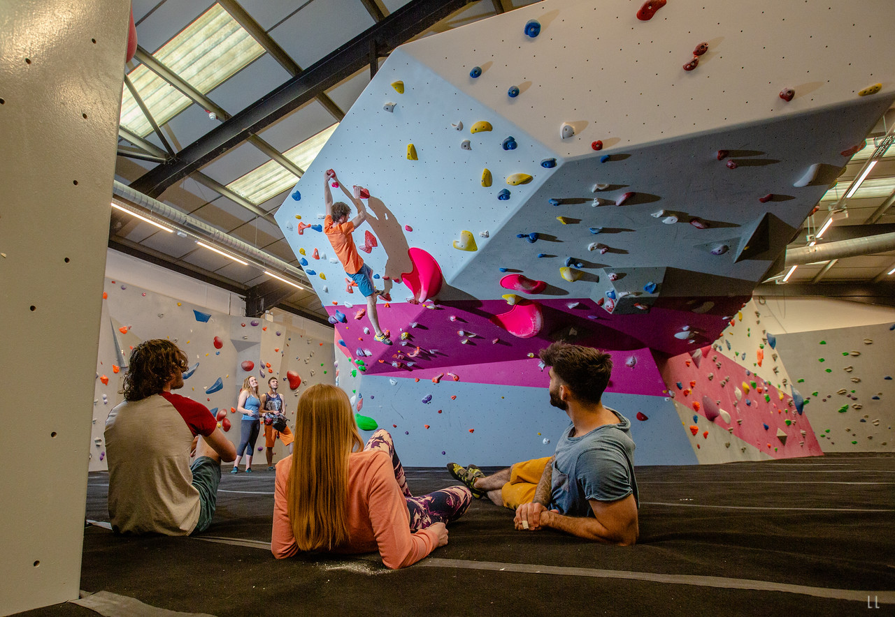
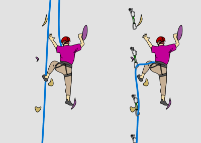
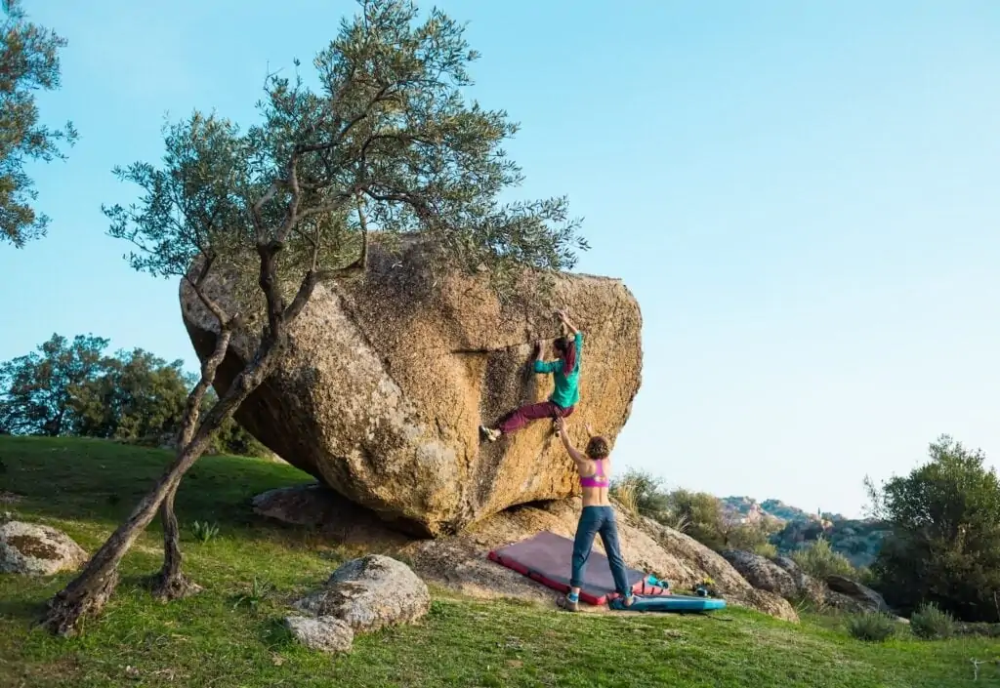
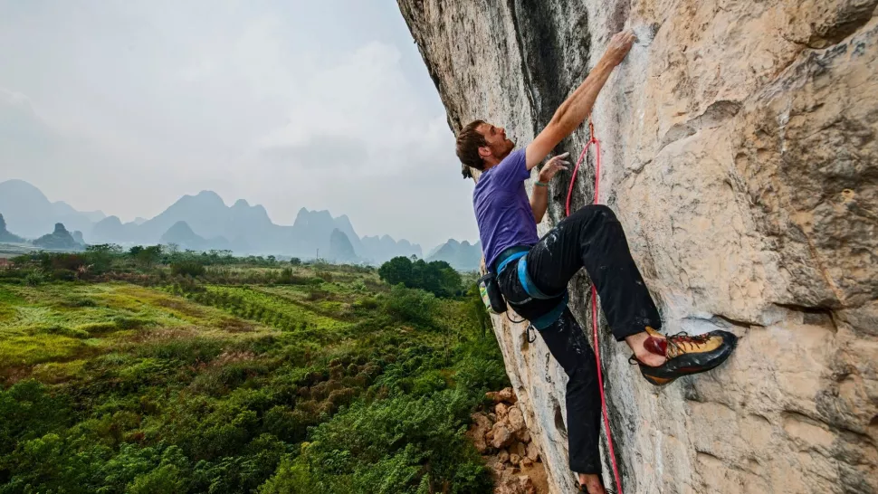

Indoor Bouldering
- Indoor Bouldering is a form climbing performed on artificial rock walls
- without the use of ropes or harnesses.
- While bouldering can be done without any equipment,
- most climbers use climbing shoes to help secure footholds

Indoor Rope Climbing
- Indoor Rope Climbing is a form climbing performed on artificial rock walls
- with the use of ropes & harnesses.
- Indoor Rope Climbing can be either Top Roping or Leading
- Top Roping has a rope threaded through an anchor at the top
- Leading has the climber manage the rope themselfs by threading it through clips as they go

Outdoor Bouldering
- Outdoor Bouldering is a form climbing performed on small rock formations
- without the use of ropes or harnesses.
- Outdoor Bouldering requires climbers to bring special safety mats
- most climbers use climbing shoes to help secure footholds

Outdoor Rope Climbing
- Outdoor Rope Climbing is a form climbing performed on mountains and cliffs
- with the use of ropes & harnesses.
- Outdoor Rope Climbing can be either Sport or Trad
- Sport is exactly like Leading but outside
- Trad is like Leading but you must find holes to secure your clips in.
